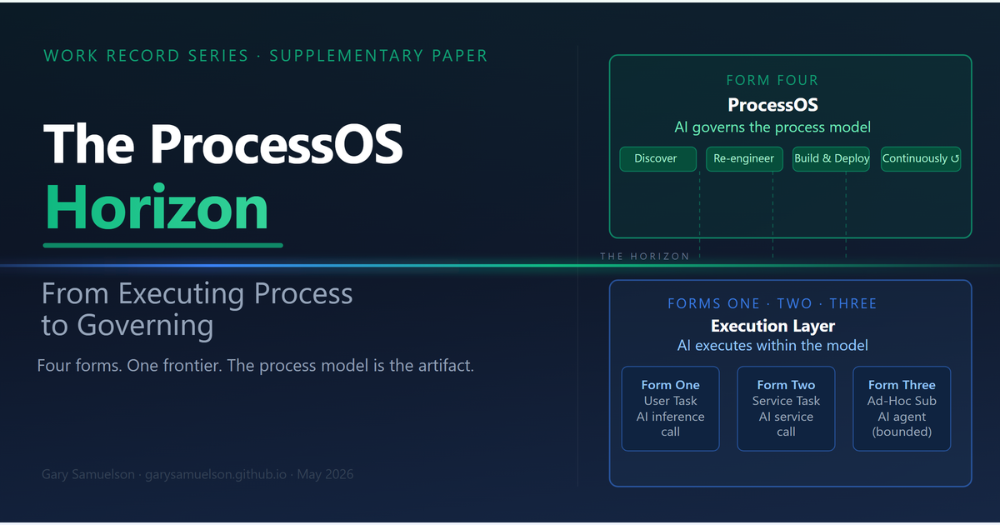
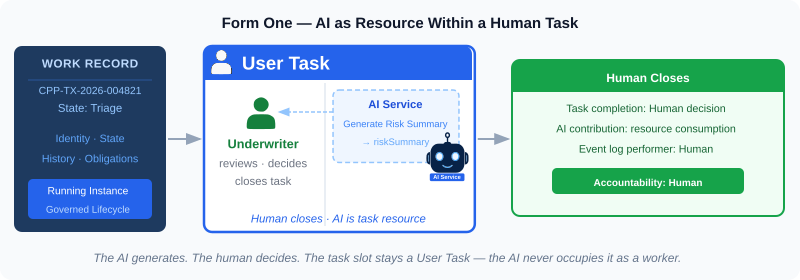
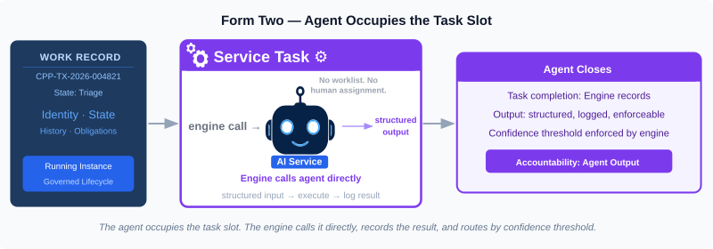
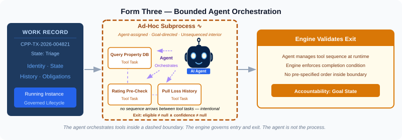
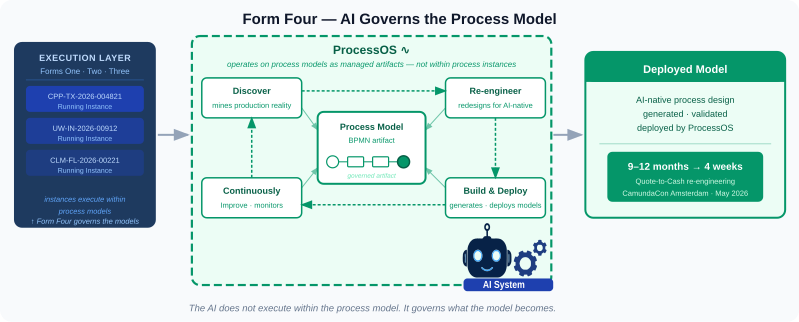

The ProcessOS Horizon¶
Author: Gary Samuelson Date: May 27, 2026 Supplementary paper — This piece builds on the research trajectory established in Work Record, which developed the three-forms framework for how AI participates in governed process execution. This paper traces the research and product convergence that points past Form Three to a qualitatively different architectural layer — one where AI operates on process models rather than within process instances. The series will develop that layer formally in its next paper.
On May 19, 2026, at CamundaCon in Amsterdam, Camunda announced ProcessOS. They described it as "an agentic operating system for AI-first enterprise transformation" [17]. That framing understates what the announcement means architecturally.
The three-forms framework — a taxonomy developed in this series for how AI enters governed process execution — describes three modes of participation: AI as User Task resource, AI as Service Task worker, and AI as bounded orchestrator within a subprocess boundary. ProcessOS now takes us to a whole new level of AI engagement - by operating directly on the proces models themselves - as a first class participant in the BPM ecosystem. Call it Form Four — not another task type within the execution layer, but a fourth relationship between AI and the BPM artifact stack: AI that governs the models themselves. Not within.
The research trajectory that leads there starts two months earlier, in a 69-page manifesto from the BPM research establishment.
The Three Forms and the Autonomy Spectrum¶
Three forms of AI participation in governed process execution — each with a distinct BPMN task type, accountability structure, and position on the autonomy spectrum.
Each participant in a governed process instance enters through a task. The task being a modeling element defining what gets done and its output on completion, with the worker deliberately left unspecified at the modeling stage and resolved at runtime. The process model assigns a role or a service type to the slot; when the instance runs, the engine resolves that assignment to a specific worker for this specific piece of work. Adding AI as a worker type means assigning it to the slot — not rebuilding the process around AI.
That assignment takes three forms, each expressed in a distinct BPMN task type. Form One uses an AI inference call — a single hosted model invocation with no state or loop. Form Two uses an AI service — a deterministic, structured invocation with no reasoning loop. Form Three uses an AI agent — a system with a goal, a toolset, and autonomous iterative reasoning. Form Four, addressed at the end of this paper, uses an AI system — a coordinated pipeline of mixed AI components operating on a different target artifact class entirely. The distinction matters: the term follows from what the AI does and what it operates on, not from how sophisticated it feels.
Form One models work as a User Task. The engine assigns it to a human participant's worklist. The AI enters as an inference call invoked mid-task — summarizing a document the underwriter is reading, surfacing a regulatory citation, generating a draft the adjuster will refine. The human closes the task. The AI's contribution is part of the task's resource consumption, not its accountability structure. That inference call goes to a hosted AI platform — AWS Bedrock, Azure OpenAI, or equivalent — carrying a context window the application assembled: the relevant document or data, the specific question, and the expected output format.

Form Two models work as a Service Task. During execution, the process engine calls the AI service directly, passes the work object's structured input, receives structured output, and records the completion in the event log. No human interaction. The AI service occupies the task slot. Accountability transfers to the AI service's output — structured, logged, and enforceable by the engine's completion criteria. In practice, a job worker service receives the task from the engine, assembles a context payload from the work object's variables, calls the hosted AI platform, and returns structured output back to the engine. There is no goal-directed reasoning here, no tool selection, no iterative loop — Form Two is a deterministic invocation of an AI capability, not an AI agent in the technical sense.

Form Three models work as an Ad-Hoc Subprocess assigned to an AI agent. During execution, the engine activates the subprocess, passes the AI agent a goal and a defined toolset, and then governs every tool invocation from that point forward. The AI agent selects which tool to call next — that selection is genuine AI judgment. But the orchestration layer intercepts each call, applies the configured guardrail, and controls whether and how it executes. The LLM proposes. The execution engine decides. The AI agent reasons toward the goal without a pre-specified step order; the engine validates goal completion on exit. The AI agent is not the process — it acts within a bounded scope the process model defines. Form Three uses "AI agent" in its technical sense: a system that pursues a goal through iterative reasoning and autonomous tool selection. A goal is assigned, the agent decides which tool to invoke next, interprets each result, adjusts its approach, and determines when the goal is satisfied. That is what distinguishes an agent from a service call.
Form Three is also where engagement scope splits into two simultaneous levels — a structural distinction Ruecker and Johnston name and analyze in Agentic Orchestration [16]. Outer orchestration governs the end-to-end business journey: the sequence of steps, governance gates, timers, and approvals encoded by human designers before any instance runs. The AI agent cannot skip gates or act outside its subprocess boundary — the engine enforces those rules unconditionally. Inner orchestration governs what happens inside the subprocess boundary: the AI agent sequences its own tool calls, reasons about intermediate results, and decides when the goal is satisfied. The engine governs whether and how each tool call executes; the agent governs which tool to call and why. Human-defined rules set the boundary. The reasoning inside it is the agent's own.

Form One lives in a User Task. Form Two lives in a Service Task with an AI service call. Form Three lives in an Ad-Hoc Subprocess assigned to an AI agent. The modeler draws the shape; the engine runs the instance.
Autonomy increases across the three forms — from inference resource, to task worker, to bounded orchestrator — but the spectrum is not a fixed architecture. Patterns that agents handle reliably migrate over time toward the deterministic end: once an agent proves consistent on a specific decision type, that decision gets hardened into rules. New complexity gets handed back to agents. The boundary between forms moves.
The Agentic BPM Manifesto¶
The Agentic Business Process Management: A Research Manifesto appeared in March 2026 as arXiv:2603.18916 [12]. Marlon Dumas leads the author list — he co-authored Fundamentals of Business Process Management [2], the field's standard textbook. Eighteen researchers from SAP, the University of Vienna, the University of Tartu, and seven European research institutions co-authored it. This is not a fringe position paper. It is the BPM research establishment's formal declaration that the field's foundational assumptions require extension.
The Manifesto introduces Agentic BPM (APM) as a paradigm shift, not a feature addition. It reframes autonomous AI agents as first-class actors in business processes — not resources assigned to task slots, but entities that perceive organizational context, reason over it, and act within explicit process frames. The distinction it draws is precise: APM agents pursue goals proactively within organizational constraints. They do not wait for task assignments. They pursue outcomes, bounded by what the process frame permits.
The Manifesto's predecessor AI-Augmented Business Process Management Systems Research Manifesto (2023) addressed AI assistance within BPM systems — what the three-forms framework calls Form One: AI as task resource, coordinated by the process engine. The 2026 Agentic BPM Manifesto explicitly builds beyond it. Agents as orchestrators, not assistants. The two papers together trace the same progression as my Work Record Series.
APM Agent's Four Capabilities¶
The Manifesto defines four capabilities that distinguish APM agents from conventional automation:
- Framed autonomy — agents pursue goals proactively but within explicit organizational constraints ("frames"), not open-endedly. The process definition is the frame. The agent acts within it without requiring a task assignment for every move.
- Explainability — agents account for their decisions within the process context. This is not general AI explainability — it is explainability tied to the specific process instance and the governance obligations it carries.
- Conversational actionability — agents interact with humans and systems through natural-language-capable interfaces tied to process actions. The conversation is not separate from the process. It is the process interaction.
- Self-modification — agents adapt their own behavior based on experience, within governed limits. The governance is the BPM layer. The adaptation is the AI layer. Neither operates without the other.
All four are Form Three capabilities. None of them map cleanly to Form One (User Task resource) or Form Two (Service Task). They describe an agent that is part of the process architecture, not an external service the process calls.
The Manifesto's central finding: today's BPMN execution layer and today's agent frameworks are both insufficient on their own. The open problem is the integration layer between them.
Camunda's Response: Agentic Orchestration¶
Camunda has rebranded its entire platform around agentic orchestration: "the open platform for agentic orchestration — orchestrating AI agents, people, and systems across end-to-end business processes with trust, governance, and control." That framing maps precisely to what the Manifesto asks for. Ruecker and Johnston make the case directly in Agentic Orchestration: From Agent Pilots to Enterprise Production [16]: agent deployments need process orchestration not as optional scaffolding but as the accountability layer that makes agent work enterprise-legible.
In April 2025, Camunda 8.7 shipped general availability of agentic process orchestration capabilities:
- AI agents modeled in BPMN using ad-hoc subprocesses — the native BPMN construct that gives an agent a goal, a bounded toolset, and the freedom to act dynamically within those bounds without pre-specifying every step in the sequence. The agent decides its own path to completion within the subprocess boundary. The engine governs entry, exit, and compliance.
- AI Connectors — Service Task-level integrations that invoke LLM-backed services within a BPMN flow. The engine calls the service, receives structured output, and advances the process.
- DMN integration for guardrails — agent decisions that violate defined business rules are caught by the DMN layer before downstream actions execute, creating enforceable, auditable compliance the agent's own reasoning cannot override.
- MCP and A2A protocol support — enabling interoperability between agents from different vendors within a single Camunda-orchestrated process.
The Agentic Value Trap¶
Ruecker and Johnston name and analyze the failure mode that validates the Manifesto's call for new governance foundations: the Agentic Value Trap.
Early agent deployments deliver real, measurable value. Organizational confidence grows. More agents get deployed, without coordination infrastructure. Agents begin conflicting with each other and duplicating work across process boundaries. The efficiency gains that motivated the original deployments get consumed by the manual reconciliation costs needed to resolve what the agents created independently.
The Agentic Value Trap is not a technology problem. It is an architectural problem: agent deployment without process governance generates coordination debt. The Manifesto identifies the same gap from the research side — the need for new architectural foundations to govern autonomous agents at scale. Ruecker and Johnston document what happens in production when those foundations are absent.
The answer, in both the book and the Manifesto, is the same: the process orchestration layer is not optional infrastructure. It is the accountability system that makes agent work enterprise-legible. Without it, agents generate results. With it, agents generate outcomes the organization can trace, govern, and rely on.
The Honest Gap¶
Process orchestration is the answer to the Agentic Value Trap — and Camunda's platform is the most advanced version of that answer currently available at enterprise scale. But the answer has a defined edge.
Camunda's own framing is precise about what Form Three currently is: "the agent isn't the process — it lives inside a process." The ad-hoc subprocess gives the agent goal-directed autonomy within a bounded scope. The BPMN engine governs the outer process instance. The process token is managed by Zeebe, not by the agent.
The execution-layer architecture where the AI reads the BPMN token, evaluates gateway conditions, and manages the instance itself — the open frontier the three-forms framework identifies — is not what Camunda has shipped. Ait et al. [15] document the modeling gap directly: standard BPMN cannot adequately specify AI agents in orchestrating roles, and propose a formal metamodel extension and graphical notation to address it. What Camunda has built is the most advanced governed container for agentic behavior within BPMN currently available at enterprise scale. It is Form Three's closest production approximation. The gap between what the Manifesto asks for and what the platform currently delivers is real and acknowledged.
The Manifesto's research agenda and Camunda's product roadmap are converging on the same problem from opposite directions: the researchers from the governance and formal model side, Camunda from the execution and tooling side. Ruecker and Johnston's book [16] occupies the bridge — practitioner translation of what the research agenda requires into what the current platform can actually deliver.
On May 19, 2026, the convergence point moved.
Form Four: The Process Model Frontier¶
Forms One, Two, and Three share a common structural property: the process model is a fixed artifact, authored by human designers before any instance runs. AI enters as a participant in what the model specifies. The modeler draws the shape. The engine enforces it. The AI is assigned to a slot within it.
Form Four breaks that property. In Form Four, the process model itself is the artifact that the AI system manages — not the execution of instances within the model, but the model's discovery, redesign, deployment, and continuous improvement. The process model is no longer a fixed input to the system. It is a governed artifact the system produces and continuously improves.
This is also why neither "AI service" nor "AI agent" is the right term for Form Four. Forms One through Three are classified by the AI component's behavior — how it operates. Form Four is classified by the target artifact — what the AI system operates on. That shift in classification axis is the point. Forms One, Two, and Three all target work items inside a fixed model. Form Four targets the model itself. The internal AI components span the full spectrum — from process mining algorithms to LLM reasoning to code generation — which is exactly why no single-component term fits. AI system captures the coordinated, multi-component nature and keeps the focus on the artifact relationship, not the internal technique.
On May 19, 2026, at CamundaCon in Amsterdam, Camunda gave Form Four a name: ProcessOS — described as "an agentic operating system for AI-first enterprise transformation" [17]. ProcessOS is not another agent inside a BPMN flow. It is an AI system that operates on process models as governed artifacts, managing the full lifecycle from discovery through automated production improvement. Camunda's framing is direct: "every business process in your enterprise was designed for a world where AI did not exist." ProcessOS is the layer that re-engineers them for an AI-native world.
Four specialized components own each phase of that lifecycle (Camunda calls them "agents"):
- Discover — mines how processes actually run in production today, not how they were documented or modeled
- Re-engineer — redesigns them for AI-native outcomes
- Build & Deploy — generates and deploys the updated process models
- Continuously Improve — monitors production and iterates automatically
Camunda demonstrated their own Quote-to-Cash process re-engineering on stage in Amsterdam: four weeks from discovery to deployed redesign. The same cycle typically takes nine to twelve months.
Camunda calls these four components "agents," though the internal AI composition is mixed. Discover relies primarily on process mining algorithms — statistical graph analysis of event logs — with an LLM layer for interpretation. Re-engineer is genuinely agentic: multi-step reasoning, evaluating redesign tradeoffs, generating BPMN artifacts. Build & Deploy is closer to structured code generation followed by a deterministic deployment pipeline. Continuously Improve is analytics and monitoring, with an LLM layer for anomaly interpretation and iteration triggers. What makes ProcessOS Form Four is not which AI technique any component uses. It is that all four operate on the process model as the managed artifact — not within running instances of one.

This is a qualitatively different architectural layer from anything in the three-forms framework. The three forms describe how AI participates within process execution. ProcessOS operates above the execution layer entirely, treating the process model itself as the artifact the AI system manages.
| Layer | What It Does | Form |
|---|---|---|
| Execution engine (Camunda 8.x) | Runs process instances, routes tokens | Forms One–Three participate within it |
| Agentic orchestration (Camunda 8.7+) | Embeds AI services and agents inside BPMN flows | Enables Forms Two and Three |
| ProcessOS | Discovers, redesigns, deploys, and improves the process models themselves | Form Four — AI system governs the model, not a slot within it |
This is what the research trajectory from the Manifesto [12] through the Kampik Large Process Model vision [14] — fusing LLM statistical power with BPM analytical precision into a unified intelligence layer — through Ruecker and Johnston's practitioner bridge [16] has been pointing toward. The Manifesto asked for AI as a first-class process actor. The LPM vision asked for a unified intelligence layer that fuses LLM statistical power with BPM analytical precision. The practitioner bridge asked for process orchestration as the accountability layer that makes agent work enterprise-legible. ProcessOS answers all three questions simultaneously — and adds one the research literature had not fully articulated: the process model itself is a system artifact that AI can govern.
ProcessOS is currently in closed beta via Camunda's "Process Zero" pilot program.
What This Means for the Series¶
The Work Record Series has been building a specific argument: that enterprise AI delivers value by closing work — by producing state transitions in running process instances, not by generating output that orbits above them. The three-forms framework shows how AI enters the Work Record as a participant. The insurance policy and value chain sections in the companion paper show what this looks like inside a real commercial operation.
Form Four does not invalidate that argument. It extends it to a level the series had not yet addressed.
The Work Record — the running process instance with identity, state, history, and pending obligations — is the object that enterprise AI deployments close work against. Forms One, Two, and Three describe how AI participates in that object during execution. Form Four governs what that object looks like in the first place. It is the layer that answers the question the series' framework assumes but does not address: how does the process model that runs all of this get designed, deployed, and improved?
The answer, after May 19, 2026, is: by AI — governed by a process model for process model governance, managed by the same execution infrastructure it produces.
The next paper now has a concrete product shape to build from. The research agenda the Manifesto named in March. The execution reality Camunda shipped in May. The architectural question that connects them is what the next paper will address.
Key Citations¶
[2] Dumas, M., La Rosa, M., Mendling, J., & Reijers, H. A. (2023). Fundamentals of Business Process Management (3rd ed.). Springer. §1.2 — Case and process instance definitions.
[12] Dumas, M., Calvanese, D., De Giacomo, G., Montali, M., Rinderle-Ma, S., et al. (2026, March). Agentic Business Process Management: A Research Manifesto. arXiv:2603.18916. — Introduces Agentic BPM (APM) as a formal paradigm shift: reframes autonomous AI agents as first-class process actors with four required capabilities (framed autonomy, explainability, conversational actionability, self-modification); identifies the gap between current BPM execution layers and current agent frameworks as the open research and engineering frontier.
[14] Kampik, T., et al. (2023/2025). Large Process Models: A Vision for Business Process Management in the Age of Generative AI. arXiv:2309.00900 [cs.SE]. — Proposes fusing LLM statistical power with BPM analytical precision into a "Large Process Model" intelligence layer capable of context-specific process orchestration and organizational guidance.
[15] Ait, A., Cánovas Izquierdo, J. L., & Cabot, J. (2024/2025). Towards Modeling Human-Agentic Collaborative Workflows: A BPMN Extension. arXiv:2412.05958 [cs.SE]. — Finds that current BPMN cannot adequately specify AI agents in orchestrating roles; proposes a formal metamodel extension and graphical notation for human-agentic collaborative workflows.
[16] Ruecker, Bernd, with Amy Johnston. Agentic Orchestration: From Agent Pilots to Enterprise Production. O'Reilly Media, Early Release, May 15, 2026. — Introduces the autonomy spectrum as the organizing frame for enterprise AI deployment decisions; names inner and outer orchestration as the Form Three architectural pattern; describes the Agentic Value Trap; frames process orchestration as the accountability layer that makes agent work enterprise-legible. Available at O'Reilly Learning: https://learning.oreilly.com/ (Early release; not yet fully indexed in the O'Reilly catalog as of May 27, 2026.)
[17] Camunda. (2026, May 19). ProcessOS: An Agentic Operating System for AI-First Enterprise Transformation. CamundaCon 2026 Amsterdam. https://camunda.com/platform/process-os/ — Introduces ProcessOS as an AI system that operates on business process artifacts rather than within process instances; four specialized components govern the full process lifecycle from discovery through automated production improvement; collapses the 9–12-month process re-engineering cycle to weeks; currently in closed beta via the "Process Zero" pilot program.
[Samuelson 2026a] Samuelson, G. (2026, May). Work Record. garysamuelson.github.io/agentic/work-record-is-bpm-task/ — Establishes the Work Record as the coupling between AI capability and enterprise value delivery.
[Samuelson 2026b] Samuelson, G. (2026, May). The Work Record Runs: From Abstract Design to Living Enterprise Object. Forthcoming — Work Record Series, Part 2. — Develops the three-forms framework and three dimensions of the running Work Record; companion paper to this piece.
© 2026 Gary Samuelson | CC BY-NC-ND 4.0 — Share freely with attribution. No commercial use. No derivatives without permission.